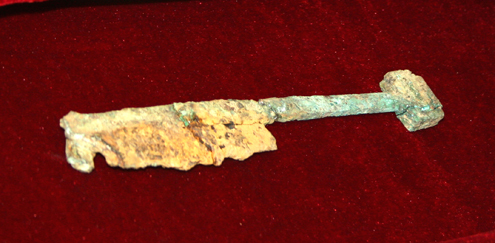
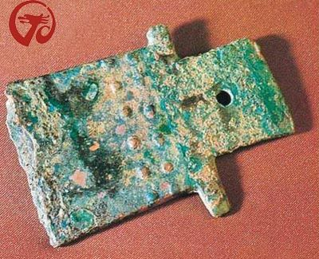
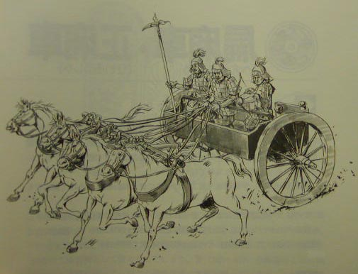
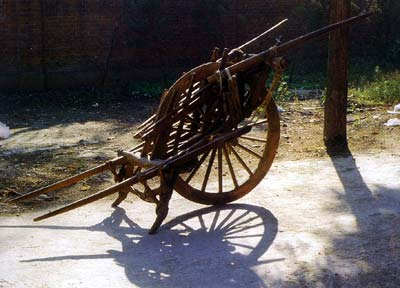
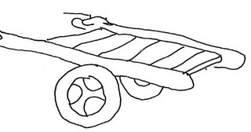
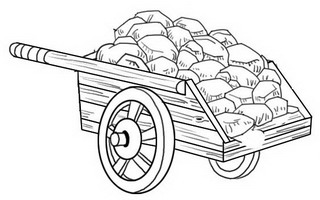
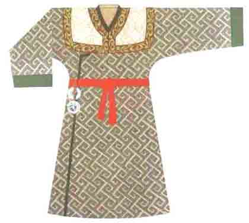

引子
以古文述事，难点之一便在于我们对历史了解并不充分，因此常常把这个朝代的东西放在了那个朝代，或者让原本是甲做的事，说成了乙做。这样与史不合，容易使文章出笑话。这一篇“幕后”，便来说说“愚公移山记”中的事物。
不过由于这篇故事重在述事，所以对于“物”的描写并不充分，能拣出来谈的并不多，望谅。
1. 铁器
“愚公移山记”中对铁器的考证是一个非常令人痛苦的事。我从一开始便设想，到底有什么法子让愚公在太行山中挖出一条路来呢。然而思来想去，只能让他用铁器。
但是在文章还没写完时，我就犯了嘀咕：京城氏生活在西周中期，有铁器用吗？那个时代的先民，要挖开一座山，到底该用什么器具呢？
中国的冶金技术的起源实在是讲不明白，大抵上来说，早至商朝就偶有陨铁的器物出现了，春秋初有铸铁，战国末有铁兵器，鲜有钢。晚至秦朝便有了锻钢。例如从历史上来说，秦统一六国时的主战武器还是青铜剑，包括像箭簇这种需要极尖利的小部件，也是用铜制，而非铁制。而当时，象鱼肠剑、干将莫邪剑这类以精钢为主要成分的武器也已经有了。所以炼铁的历史，早无出于夏商，晚不过于春秋。
《刀剑录》中说夏代便有“孔甲”采铁铸剑，但无有切实证据。郭沫若则提出周初便有铁器的说法，郭老是通过文字考据来论证，后来杨宽在《中国古代冶铁技术发展史》中解释，认为冶金史上总是先有块炼铁，而后才有生铁，而中国春秋时间已经有了生铁，那么块炼铁就应当出在西周中期至春秋中期之间。
关于这个年代，在较近的考古中是有实据的。在三门峡虢国墓地（西周晚期至春秋早期，约公元前700年）中出土过一柄块练铁制成的铁剑。因此可被考据的铁器历史，大致只能到春秋早期。

（春秋早期的铁器(铁刃铜削) ）

（商代铁刃铜钺(陨铁)）
“愚公移山记”所说京城初学得冶铁之技的时间，大概是在公元前990年左右。因此在这个时代，是不应该有“冶铁之技”的。这篇古文只说“（求之以）粗铁之器”，实在是想跳过这个细节，不确切地说明铁器的材质。粗铁在冶铁工艺中算作什么铁，我也说不清，大致说成是劣质的铁块吧。即使如此，要用这样的粗铁来做农具或民用，也实在不可能，因为这时的铁器（即使是劣质的）也不可能量产来做农具。
但是我又不可能在这篇文字中说京城氏用铜器来提高了愚公的工效。因为那个时代，铜是很珍贵的资源，有来做农具挖山，大谬。
所以这里说“京城初习得冶铁之术以归”，其实是假的。
2. 推车
京城初还学了一项技术，是“制车”。这里所说的车，当然不是战车，如果是战车，那对愚公挖山来说是没有什么意义的。
所以京城初学得的当是某种“人力车”或“畜力车”的制作工艺，例如推车或牛车。那个时代象马车、牛车这样的东西，是贵族或仕官的座乘，如果说它用来运土，得笑死Ｎ多人。所以更进一步地推论是，京城初所学的能用于愚公移山的“车”，是一种（人力的）推车。
这就麻烦了，推车这个东西，在京城初所在的时代，被发明出来了吗？
如果是“车”就比较好回答，黄帝时代就已经有了，而且还发展出了专司制车的官职（叫车正），但形制上是独辕车，到了战国时代，才发展出双辕的车。车的样式呢，则主要是两轮的，少有四轮的。畜力方面，在夏商之前最多是三匹牛马，周朝后有四~六匹牛马拉的车。
但推车呢？这个历史上也考证过，独轮推车出现在西汉（而且独轮车是中国传到外国的一项先进技术）。独轮车的问题在于制作简单，但操作复杂，一般人是不会用的。所以它出现的比较晚，后世学者推论，诸葛亮所制的“木牛（流马）”，就是一种特殊的独轮车。所以直到三国时期，独轮车的制作与使用，仍然是一件“技术活”。

（单辕双轮战车(驷)）

（独轮车）
而自夏商至春秋，战车大多是双轮。所以后来秦始皇要“车同辙”，就是要求这两个轮子之间的距离一样。既然双轮的战车很早就有了，那么双轮的推车会不会早于独轮车而出现呢？是的，距古书的记载，早在夏朝晚期的时候，就已经能够制造有辐车轮的轻便两轮车，但是这个时期的两轮车是用人力牵引，而不是推的。商时称之为“胡奴车”，周代叫“辎车”，秦时称为“辇”。在秦、汉之后则一般用来特指君王、后的所乘的车。
两轮车有了，但初时是用来拉的（你看“辇”这个字，就是两人拉车），所以什么时候开始有用一个人来推的两轮车，就没得考证了。而我们在“愚公移山记”里说京城初学得的制车之技，就应归为这种两轮车（万不能变成了独轮）。然而是推还是拉，则不重要了。
关于这个细节，在本书第二章的四格漫画中就有表现。我当时写漫画脚本时就写着“双轮推车”，等到明明、丘宝画的时候也一再叮嘱，一定是“双轮推车”。所以我手边就有了下面这两个版本的“双轮推车”——最终使用的是丘宝版本的漫画，所以大家只得看到第二种。:)

（版本一）

（版本二）
3. 茶、马与盐
基本上，原始商业交易是需求市场的一种表现。简单的说，是有需求就有市场。如果考究一下早期社会的资源分布，就会发现，如果一个地方缺乏某种资源，那么就不会建立起依赖这种资源的经济或文化。
虽然不会有这种文化，但并不会消除掉这种市场需求。相反，他们会把这些资源当成稀缺商品，既稀缺则必然价贵。用在“贱买贵卖”的基本商业法则上，就变成了：如果一个地方没有某种资源，则必然存在这种资源的市场；反过来，如果富余某种资源，则必然成为这种资源的产地。
基本的商业法则就是这样。而“愚公移山记”中的端木氏营商，有没有违反这些规则呢？换言之，就是三个问题：
- 端木氏“闻齐东有海盐之市”是真的吗？
- 端木氏从晋南拿“茶、布”，能到齐东去买好价钱，然后换回海盐吗？
- 端木氏真的能做粗铁换茶、南茶北马的生意吗？
这只要看看这些地方的资源情况，就可以有答案了。
“齐东”是指今天的山东东部。山东又叫齐鲁之地、渤海之滨，所以愚公填土石于渤海，京城游学于鲁国，和端木去齐东经营走的是同一条路，至多是远近不同而已。因此呢，说智叟命长子“荷担而从”，以及京城氏命子“随焉”，都是可行的。齐国的范围，大概包括今天山东省偏北的大部，兼有今河北省的东南部，全境东临渤海。自古便盛产海盐，也是中原地区的海盐的主要交易地。
再说晋国的茶。其实晋国（今山西）并不盛产茶叶，但晋商历来有交易茶的传统，他们主要在福建、两湖、安徽、浙江、江苏一带购买茶山，然后包销。所以晋国并不产茶（三国两晋前的文献中所见的重要茶叶产地，几乎都在巴蜀和荆楚），但也有茶叶交易的市场。因而在“愚公移山记”中说“（端木氏）晋中以易茶”也是可信的，但晋中不应直接理解为地理中心，而是政治经济中心就好了。
但这个问题还没有完，因为那个时候人们到底喝不喝茶，还是个问题。陆羽在《茶经》中指出：“茶之为饮，发于神农氏。”这个说法落不到实处，古人一说什么东西好，就归到神农、轩辕之类的老祖宗头上，这种言论拿来做考据，大多不确实。中国茶文化的考据中，只能确定在三国之前，但早到什么时候，就考证不确切了，但远在秦汉、先秦时期的说法也都是有的。所以说，关于茶和饮茶，京城氏那会儿大概还是有，只不过经不起考证。
最后我们说说“燕北易马”。燕国在哪儿呢？在夏商时期，今北京地区有一族人以“晏（燕）”为图腾，为族徽，为族名，并进而为地名、国名。后来周灭商，建立了诸候国“燕”，又称北燕。所以京城氏时期的“燕”就是这个北燕，位于今天的北京房山地区。从地理上看，燕北便是草原了，是游牧民族生活的地方，当然不会少了马。所以京城氏的生意，从晋中易茶，到燕北易马，南茶北马的生易，确实是可以做得的。
我们今天的人写古文，尤其是写古代背景的古文，应该要慎重一些。能考实的尽量考实，不能考实的，在用字措辞上便要虚些。例如前面写到的“粗铁”，其实后来任真先生改到这一处时，便问“何谓粗铁”。我笑着说，大概是炼不成铁的劣质金属块。这意思，便是考据不充分，不堪细究，所以虚写为“粗铁”了。
同样的道理，写贸易，起码要合符贸易原则。如果写错了，变成京城氏要拿晋地的盐去换齐东的马，那就得闹笑话：晋地虽也有（池）盐，但海边可不养马啊。
4. 布与衣饰
京城氏是拿茶、布去交易海盐的。这里的布是什么布呢？古人的布与帛是两种东西，前者是织布，后者是丝绸。帛这个东西，是要拿蚕丝来做的，出现的较晚。《孟子·滕文公》：“五亩之宅，树之以桑，五十者可以衣帛矣”，所以看起来，直到晚周战国时期，帛衣还是很名贵的，需要大户人家才穿用得起。
虽然布、帛这两种东西都早早是有的，但事实上当时的一般民众还是穿麻布和毛布的褐衣。所谓褐是用兽毛捻线织布，还将毛打成毡子。这样的毡、裘也有很多种，有粗毛、细毛之分，也有皮质之别（例如孟尝君的狐白之裘）。但到了细毛、狐裘之类，一般人也穿不起了。
所以那个时代，大略是敝体以布，敝寒以裘。大略就是这样一种衣着文化。从款式上来看，象安阳小屯出土的两个碾玉童子，都是头上两个丫角，身穿右衽，束带及膝的上衣，下穿长至脚面的裤子，脚穿平底鞋，其装束与辛亥革命以前的民间装束，并无多大差异。而早至商、周，象冕衣、寝衣之类就已经有了，也有冠、带、袂、履之类的服饰。
说这些细处，主要是因为那套漫画中的人物形象，大概也不差的。但细节上也讲不实，丘宝的画法，大概还是以影视剧作了些参考，所以像与不像，自有别人去研究。我们不要追究得太细，只消不是画成光腚，或者树叶遮体的原始时代，便已是不错了。

（东周男子服饰）
但端木氏是要拿“茶、布”去齐东交易的，这个交易做不做得成呢？我想大抵做得。因为晋（今山西）、豫（今河南）之地当时是农耕文化，而齐（今山东）是渔业文化，农耕文化的织布技术当然强过渔业文化。所以不管端木氏是拿布还是帛去齐国卖，总还是能有些获利的。
5. 斗与车
大家现在读到的“愚公移山记”中是没有用到“斗”这个量器的。此外，虽然有几处用到了“车（和车马）”，但也没有用“车”来做量器的。
但在这篇故事的最初版本里却是有的。其一便是说“端木远商于诸国，钱资允盈，斗金而量，竟无数”。任真先生在回信中问：“斗金而量是何意。”我解释说，就是“以斗量金”。任真先生以为不妥，认为金不以斗量，便改成了“资财愈充”而已。
但金真的不以斗量吗？这个问题我查了很久，但查不实在。因为斗是个容器量具，不用来称重。古人说“千金”是泛指多，而说“千两黄金”才是确指。而这“千两”却是指重量，不是体积大小。所以，如果某人要算算自家藏了多少黄金，想来是不用斗的。至于常见的成语“日进斗金”，据说已是出自明清小说，在先秦时是不会这样用的。
所以在最终的“愚公移山记”中，没有“以斗量金”这样用来计算财富的写法。但是古文中也有以容器来度量黄金的，但不是用来计算个人财富，而是用来赐、赠之类。例如皇帝赏赐，有“斗珠”、“斗金”之类，这也包括有用斛来量的。因此，在这篇文言里面，还有一处说晋王“赐（公输）同金百斛”的，这一斛，就是十斗了。
在这篇故事的最初版本里面，还有一处是用“车”来量金的。这是说到端木长“备三军之甲，集十乘之金”去见晋王，这个“十乘之金”就是十车的黄金。但任真先生读到这里，又疑，注曰：“金以乘量，愿慎考于古为佳？”我的确找不到这种用法的出处，但是我也想不出一种法子，能叙述端木长向晋王献了这许多的黄金。于是求计于任真先生，无解；又求计于另一位深谙国学的朋友，仍无解。后来，任真先生建议去掉这对句的句式，改作了“备三军之甲，金以十乘”，才算了事。
“金以十乘”是指运了十车黄金，强调运送的方法；而“十乘之金”，则是强调度量的单位。相比之下，前者是要更合逻辑一些的，所以就有了读者看到的这个版本。
6. 工程
讨论“工程”这个词，是因为在文言中出现了“工程伊始”这句话。这句话大家都应该会读得懂，但问题是“工程”这个词，在讲述先秦的古文中能用得吗？
既是写古文，写文言，那就该写得象一些，太新近的词是不应该用的。例如要在讲先秦的文言中写上“摩登”一词，可能得令人笑掉大牙。那么“工程”这个词，用不用得呢？
其实“工程”在这个词，在唐朝之前是未见使用的。唐以前的文献里，多用“工事”。工程和工事其实是同义，在不混淆的情况下，也用“工”这个字。例如在任真先生批改另一处“工程始速”时，就建议用“工始速”。同样，“时工程殆半”，任真先生也批了一句：宜作“时工事且半”。
不过最终这个词还是用成了“工程”。因为这本书是讲工程的，如果再换个词，大家并不好理解，也没有必要。只是大家应该清楚，这不是那时的惯用词。
7. 其它
这一篇内幕写到两三处与任真先生商讨改稿的事，但这些记叙只是廖廖。我与任真先生在近两月的时间里，对这篇文言多番校改，其中的细节我放到最后一篇再讲，这里就先不细说了。
这篇文言里许多与史实相关的内容，大都经过考证。相关的资料文献，我也在最后一篇中去列举。大多数人不关心这些文献的细节，所以也不至于要在这里一一列出来。若只为图个门面上的事，便是不必了。
下一篇将是这辑内幕中最精彩的部分，要讲的是军事、地理、战争与谋略。个人以为，“愚公移山记”固然是写工程相关的事，但最终所述的道理，却不全用于工程。就如同我喜好古文，未见得便要与古人对话，拿到今天来，讲些今天的事，也是可以的。
器物之用，惟在人法。古文作为一种工具，一理相同。